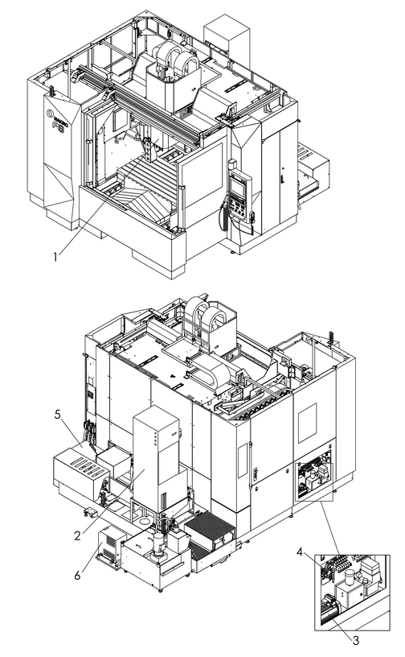

|
<< Click to Display Table of Contents >> Navigation: Chapter 2 Periodic Maintenance > Periodic Maintenance List > Daily/Pre-Operation Inspection/Maintenance |
|
|
<< Click to Display Table of Contents >> Navigation: Chapter 2 Periodic Maintenance > Periodic Maintenance List > Daily/Pre-Operation Inspection/Maintenance |
NOTICE |
•Be sure to always conduct the daily or pre-operation inspection before using the machine. |

Figure 2.1 Daily or Pre-operation Inspection
No. |
Unit |
Refer to |
Inspection Item |
|---|---|---|---|
1 |
Spindle |
Cleaning the Spindle Taper Section •Inspection location: Spindle taper section •Normal state: No chips or cutting fluid |
|
Checking the O ring of the Sleeve •Inspection location: O ring •Normal state: No cracks or wear |
|||
2 |
Spindle and feed axis temperature controller |
Checking Oil Level and Refilling with Oil •Inspection location: Oil level gauge •Normal state: -When the machine power is turned ON: Lower limit line or higher -When the machine power is not turned ON: 1/2 (middle) or higher and upper limit line or lower |
|
3 |
Hydraulic Unit |
Checking Oil Level and Refilling with Oil •Inspection location: Oil level gauge •Normal state: -When the hydraulic pump is running: Between lower limit line and upper limit line |
|
4 |
Pneumatic System |
Checking and Adjusting the Pressure of the Air Regulator •Inspection location: Pressure gauge •Normal state: -For main air: 0.45 Mpa -For scale air: 0.1 Mpa -For non-contact automatic tool measurement device purge air (option): 0.2 Mpa |
|
Checking for Clogging of the Mist Separator •Inspection location: Indicator •Normal state: Red section is positioned on the right side of center |
|||
5 |
Chip Disposal/Cutting Fluid Supply Unit
|
Clearing of Chips from Chip Bucket |
|
Checking and Replenishment of the Cutting Fluid Level •Inspection location: Level gauge •Normal state: -Coolant pump stopped: At 2/3 level or higher on the level gauge |
|||
Checking of Cyclone Filter Inlet Pressure •Inspection location: Pressure gauge •Normal state: Pressure within 0.17 ± 0.05Mpa |
|||
6 |
Air Dryer Unit |
Checking of Evaporation Thermometer •Inspection location: Evaporation thermometer •Normal state: Indicator is within the green zone |
-NOTES-
1Be sure to perform any needed general maintenance such as cleaning away of the chips inside the machine and arranging and clearing of the area around the machine whenever necessary.
2For daily inspection of the NC unit, refer to set of NC manuals provided by FANUC.